> Previously we discussed obtaining sample data from the population of interest. In this chapter we will be using information in the sample to confirm what is true about the population. Then we can generalize the process to when we do not know what is true about the population.
Objectives
At the end of this section you will be able to:
Construct and interpret a sampling distribution for the mean
Construct and interpret a sampling distribution for proportions
Definition5.1.1.
Statistical inference is a process of drawing conclusions about the population based on the information from a sample.
First let us review some vocabulary and notations. When we refer to a parameter, we are referring to a number that describes some aspects of the population, such as the mean, standard deviation, and proportions. While a statistics is a number that describes that same aspect about the sample.
Here is a summary of the notations we will be using the rest of the semester.
Table5.1.2.
Statistics
Parameter
Mean
\(\bar x \)
\(\mu \)
Standard deviation
\(s\)
\(\sigma \)
Proportion
\(\hat p\)
\(p \)
When we want to describe an aspect of the population, we use the sample statistic as our best estimate of the parameter.
As we have seen from class data, it can vary from semester to semester depending on the class makeup. So if we want to predict the parameter from the sample statistic, we need to know how much it may vary from sample to sample.
Recall from the first week of class how we estimated the average word length of Gettysburg Address? Each person collected a sample of 10 words and found the average number of letters per word. Now, we are going to look at the distribution of this data. We are plotting each person’s average value on a dot plot so see how much variation we have within the samples. If we have more samples, we can get a better estimate of what the population value is likely to be.
Below is a sampling distribution of the average word length from ten circle words from a class of 34 students, thus 34 dots in the distribution with average values ranging from 3.0 to 9.4. The distribution is bimodal for 5.5 and 6.0. We can see the variation in the average values from the sample of ten words.
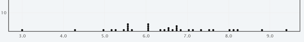
Figure5.1.3.Dotplot of Average Word Length from Gettysburg Address
The histogram of the same data for 34 students is a bit more bell shaped when grouped into intervals with most values landing between 5 and 8.
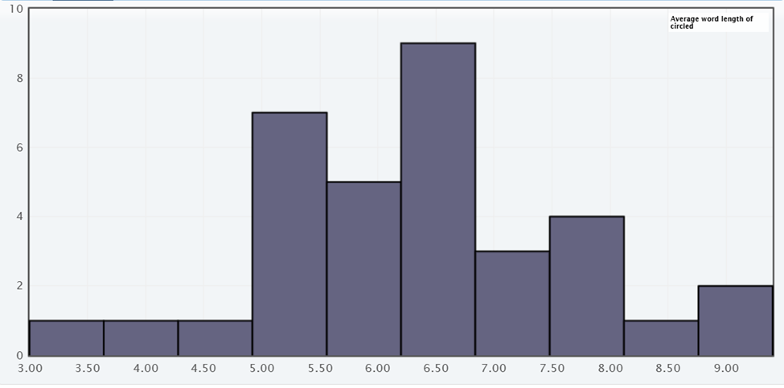
Figure5.1.4.Histogram of Average Word Length from Gettysburg Address
Below is a sampling distribution of the average word length from the ten random words selected from Gettysburg Address in a class of 34 students. This distribution has average values ranging from 3.0 to 6.3. The distribution is multimodal for 4.0 and 4.4 and 5.0 with a smaller range of values. The random sample is a better predictor of the actual mean.
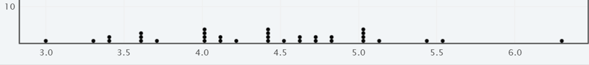
Figure5.1.5.Dotplot of Average Random Word Length from Gettysburg Address
The histogram is more bell shaped centered between 4.0 to 4.7, which is a better predictor of the true population mean for the average word length of Gettysburg Address.
What do you think will happen if we have a larger number of students finding the average word length? Would the distribution be more uniform or more bell-shaped? Would our prediction be better or worse? Think about it for a minute or two and then we will continue our investigation.
Below is a sampling distribution of the average word length from ten random words from Gettysburg Address using several classes. The total number of students is 267, thus 267 dots in the distribution. The values range from 2.0 to 6.6 with a mean of 4.47 and median 4.4 letters per word. The mode is 4.0 letters per word. This distribution is more bell shaped centered around 4.4 letters per word. Having more student samples helps us make a better prediction of what we think the population mean is.
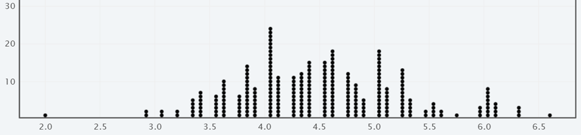
Figure5.1.6.Dotplot of Average Word Length from 267 Samples
With a larger sample of 267 students the distribution is more bell shaped and clustered around the parameter in the center. Here we would predict the population mean to be around 4.4 to 4.5 letters per word.
Here is a case where we can compare our prediction to the actual population parameter to see how close our estimate is. The actual average is 4.29 letters per word in Gettysburg Address.
Discussion
The dotplots show different values for each sample mean, but the distribution is fairly symmetric (even though the original sample is right skewed) and centered around the population mean of 4.29 letters per word. The distribution of sample statistics from many samples is called a sampling distribution.
Definition5.1.7.
A sampling distribution is the distribution of sample statistics computed from different samples of the same size taken from the population. A sampling distribution shows us how the sample statistic varies from sample to sample.
Knowing how much a statistic varies from sample to sample is key to helping us know how accurate the estimate is for the population. One measure of variability associated with the sample statistic is the standard deviation of the sampling distribution. When each sample is larger, there is less variation within the distribution. The more samples we use for the distribution the better our estimate will likely be.
We use the standard error to describe this variation, which is the standard deviation of the sampling distribution. It measures the typical distance between the sample statistics and the population parameter.
Let us investigate how the sampling distribution will change if we alter how big each sample of words is for each student. But this time, we will use technology to help simulate this process so we can have larger samples.
Using Technology
Since it is often difficult to create a sampling distribution, such as having 1000 students gather a sample of 10 words to predict the average, we can use technology to simulate a sampling distribution. We are going to upload the Gettysburg Address into StatKey and choose a variety of sample sizes to see how close we can get to predicting the actual average number of letters per word.
Open StatKey and in the middle of the page we want Sampling Distribution and click on Mean.
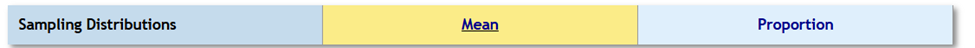
Figure5.1.8.StatKey Sampling Distribution Menu
Click on Upload File and locate where the data file is saved on your computer and select the variable Actual Words.
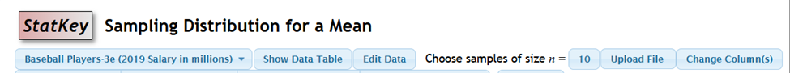
Figure5.1.9.StatKey Sampling Distribution for Mean Menu
The default is choosing a sample of size n=10.
Once the data is uploaded you will see a similar image to this one.
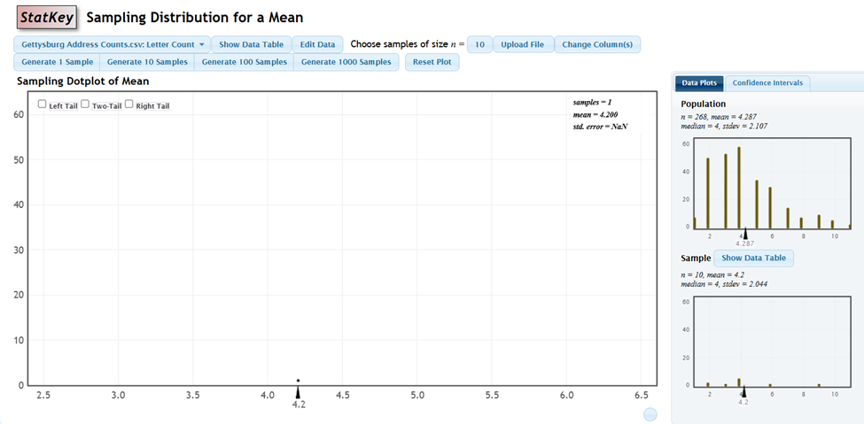
Figure5.1.10.StatKey for one sample
Interpreting StatKey: The top right graph shows the original data with 268 words with an average of 4.287. We can see the original data is right skewed. If we click on the Generate 1 Sample button we see the number of letters for each of the 10 randomly selected words from the population in the dot plot on the bottom right side. This sample has a mean of 4.2 and this mean value is graphed in the main graphic as a single dot. We can generate another sample of ten words by clicking Generate 1 Sample .
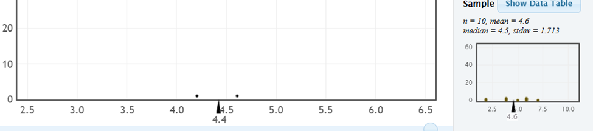
Figure5.1.11.StatKey for two samples
This new sample of 10 random words has a mean of 4.6 and is also plotted on the main graph. The average of the two sample means is 4.4.
Our goal is to see what the typical values are when we have more samples. Now let’s generate 100 samples to represent 100 students completing this task. (Note: when you complete this on your own, your values may be slightly different but once the number of samples is larger enough the distribution will be similar.)
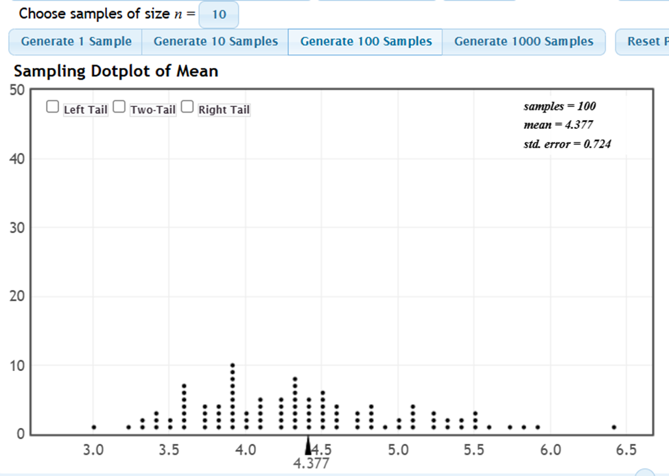
Figure5.1.12.StatKey with 100 sample means
Now we have 100 students represented by the 100 dots, and the mean of these average values is 4.377 which is at the center of the distribution. This distribution is still slightly right skewed. So let us add more samples to the distribution.
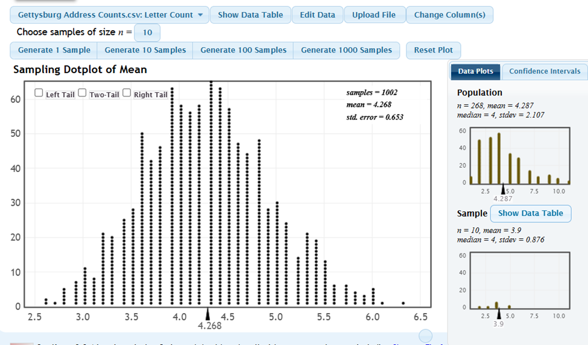
Figure5.1.13.StatKey with 100 sample means
We can see we have a bell-shaped distribution that is symmetric and centered at mean 4.268 which is close to the know population parameter of 4.287. We now have 1002 total samples of ten words, and the standard error is 0.653 to describe how much variation we have between the samples.
We can see that most average values for the ten words is between 3.5 and 5.0 from the distribution, which relates to the mean of the distribution plus/minus the standard error, thus \(4.268 +/- 0.653 \) which gives 3.615 to 4.921 as the typical values.
Using the 95% rule from earlier in the semester we have the mean plus/minus two times time standard error (which is the standard deviation of the sampling distribution) the mean \(4.268 +/- 2(0.653)\) gives 2.962 to 5.574 which relates to where most of the values occur. So the center of our sampling distribution (mean 4.268) is a good estimate for the population parameter (4.287).
Practice Problems
Now it is your turn to experiment with sampling distributions using StatKey. You can continue using the Gettysburg Address or choose one of the pre-loaded data sets in StatKey.
Checkpoint5.1.14.
What happens to the shape of the sampling distribution when more samples are included?
Solution.
With more samples, the distribution becomes more symmetric and bell-shaped. The center of the distribution is the population mean or population proportion.
Checkpoint5.1.15.
What happens to the shape of the sampling distribution when each sample size is larger? Say 25 or 50 words in each sample.
Solution.
When each sample size is larger, the distribution becomes more symmetric and bell-shaped with fewer samples needed. The center of the distribution is the population mean or population proportion.
Checkpoint5.1.16.
What happens to the center of the sampling distribution when more samples are included?
Solution.
With more samples, the center of the distribution is closer to population parameter value.
Checkpoint5.1.17.
What happens to the center of the sampling distribution when each sample size is larger? Say 25 or 50 words in each sample.
Solution.
When each sample size is larger, the center of the distribution is population parameter.
Checkpoint5.1.18.
What happens to the standard error of the sampling distribution when each sample size is larger?
Solution.
When the sample size is larger, the standard error becomes smaller since there is less variation within larger samples.
Example5.1.19.
Let’s change this to sample size of n=25 so we can see how it compares to previous sampling distributions. Click on Reset Plot and change the choose samples of size n = 25 . Then generate 1000 samples. This will represent each student randomly selecting 25 words to find the average number of letters per word. The sampling of 1000 dots represents the 1000 students completing this task.
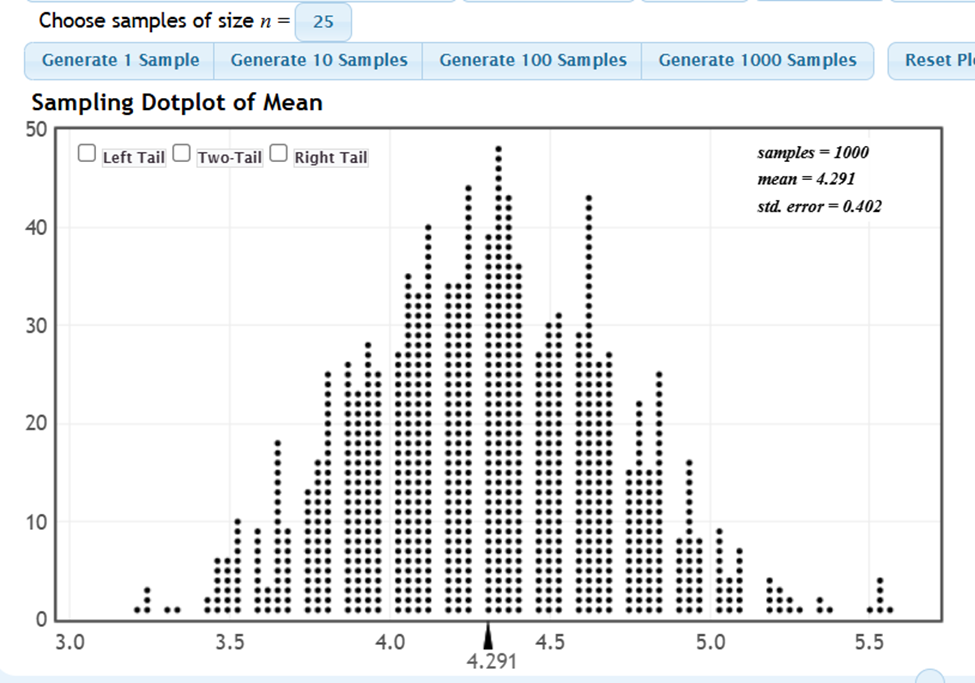
Figure5.1.20.StatKey with 1000 samples of 25 wordsSolution.
This sampling distribution has a mean of 4.291 with a standard error of 0.402. The amount of variation is smaller when each sample is larger. With more samples (dots) the center is closer to the population parameter.